11. 3D Data Fusion
Multi-modal fusion, ICP registration, TSDF, rolling buffer, SVD pose estimation
1. Overview and Motivation
This module addresses two major topics in 3D computer vision. First, fusing data from different modalities — combining point clouds (LiDAR), depth maps, and RGB images into a single coherent 3D model. Second, overcoming KinectFusion limitations — solving the practical constraints of real-time TSDF-based 3D reconstruction: limited volume size, drift, and geometry melting.
2. 3D Data Types and Representations
Sensor Modalities
| Sensor Type | Output Data | Dimensionality | Scale |
|---|---|---|---|
| LiDAR | Point clouds $(x, y, z)$ with optional color/intensity | 3D | Global, large-scale |
| RGB camera | 2D color image | 2D | Depends on lens |
| ToF camera | Depth maps | 2.5D | Local, limited range |
| Structured light (Kinect) | Depth + RGB maps | 2.5D | Local, ~0.5–4.5 m |
3D Representation Formats
| Representation | Pros | Cons |
|---|---|---|
| Voxel grid | Regular structure; easy to process with 3D CNNs | Memory-intensive $O(n^3)$; fixed resolution |
| Octree grid | Memory-efficient; only subdivides where detail exists | More complex data structure |
| Mesh | Compact surface; good for rendering | Hard to update incrementally |
| Point cloud | Raw, lossless; no discretization | Unstructured; noisy; redundancy |
| Depth maps + poses | Compact storage; easy to capture | Only 2.5D; requires pose information |
The core challenges when fusing data from different sensors:
- Different data formats: LiDAR produces 3D point clouds; Kinect produces 2.5D depth + RGB images.
- Different data densities: LiDAR is sparse; Kinect is dense.
- Different noise characteristics: LiDAR has sparse gaps; Kinect has quantization artifacts.
- Unrelated coordinate systems: Each sensor has its own reference frame.
- Incompatible intrinsic parameters: LiDAR has no focal length in the traditional sense.
3. LiDAR vs. RGB-D Sensors
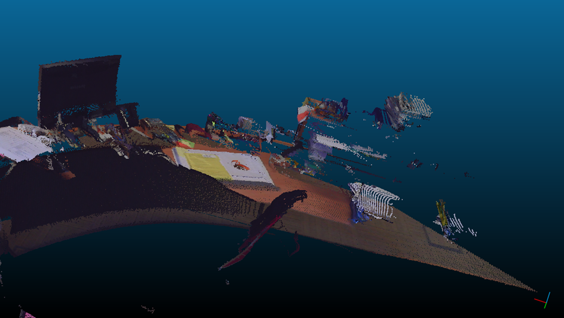
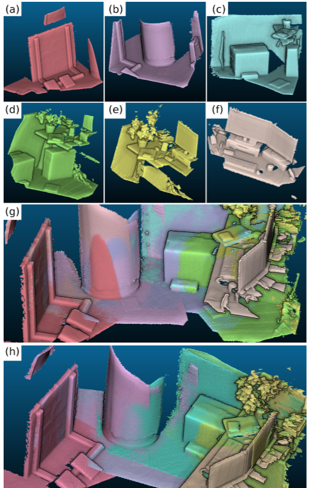
| Property | LiDAR | Kinect |
|---|---|---|
| Accuracy | High (mm-level) | Low–Medium |
| Density | Low (sparse) | High (dense) |
| Scale | Global | Local |
| Holes | Many (occlusions) | Few (within range) |
| Color | Limited | Full RGB |
| Cost | Expensive | Inexpensive |
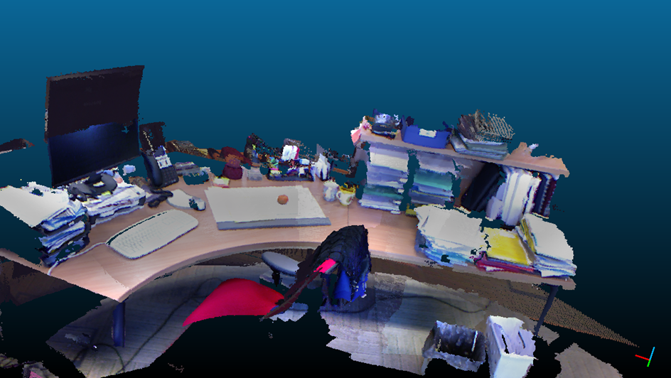
4. Three-Stage Multi-Modal Fusion Pipeline
Fusing LiDAR and Kinect data follows three sequential stages:
| Stage | Goal | Key Technique |
|---|---|---|
| Stage 1 | Unify data format representation | 3D pyramid decomposition + raycasting |
| Stage 2 | Unify coordinate space | SIFT feature matching, transformation chain |
| Stage 3 | Fuse into unified 3D model | TSDF integration or point cloud merge |
5. Stage 1: Unifying Data Format
Goal
Bring both LiDAR and Kinect data to a unified format — preferably RGB-D — so that 2D image-based matching can be applied. Full 3D formats (point cloud, voxel grid) are computationally expensive for matching.
3D Pyramid Decomposition
This is the key technique for converting a LiDAR point cloud into a set of virtual RGB-D frames:
- Decompose the point cloud into 3D pyramids — frustum-shaped volumes representing virtual camera viewpoints. Each pyramid's shape is designed to match the Kinect's intrinsic parameters (FOV, focal length, aspect ratio).
- Generate synthetic RGB-D images via raycasting — a virtual camera is placed at the pyramid apex. Rays cast through an image plane into the point cloud produce a synthetic depth image and synthetic RGB image per pyramid.
- Compute SIFT features on each synthetic RGB image for later matching against real Kinect frames.
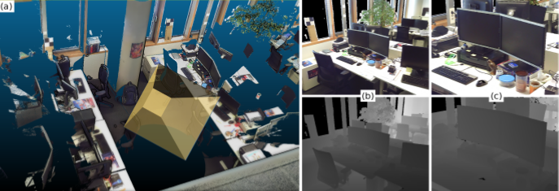
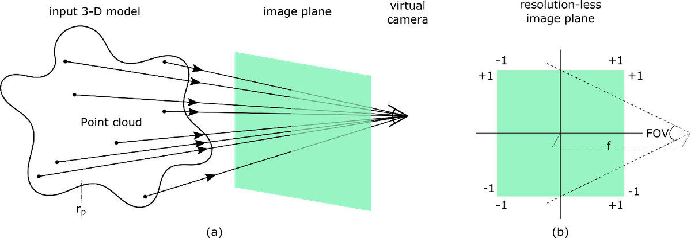
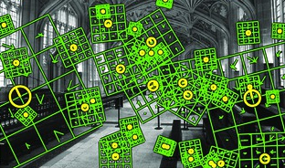
6. Stage 2: Unifying the Coordinate Space
Master Coordinate System
The LiDAR coordinate system is adopted as the master coordinate system. All virtual pyramids were defined on the LiDAR point cloud, so their poses in the LiDAR frame are already known.
Registration via SIFT Feature Matching
For each real Kinect RGB-D frame:
- Compute SIFT features on the Kinect's RGB image.
- For each pyramid's synthetic image, find SIFT feature correspondences with the Kinect image (ratio test + RANSAC).
- If correspondences are found below an error threshold, compute the transformation matrix $[R | \mathbf{t}]$ from Kinect frame to pyramid coordinate system.
- Since the pyramid's pose in the master system is known, compute the Kinect frame's pose in the master system.
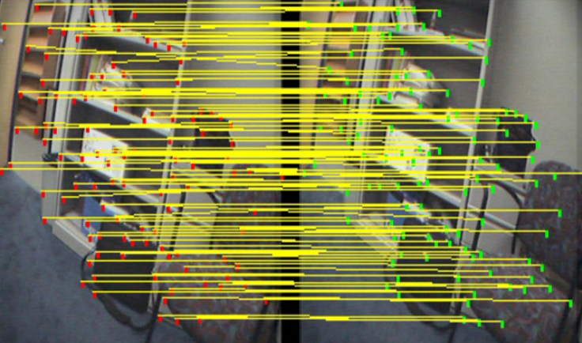
7. Stage 3: Fusing into a Unified 3D Model
Option A: TSDF Volume Fusion
Project both RGB-D pyramids (from LiDAR raycasting) and Kinect samples (from their known master poses) onto a global TSDF voxel grid. The TSDF update rule naturally fuses both data sources via weighted averaging:
Option B: Point Cloud Fusion
Extract a point cloud from each Kinect RGB-D frame using the back-projection formula:
Transform into the master coordinate system, merge with the LiDAR point cloud, then filter for outliers and duplicates using octree-based deduplication.
| Criterion | TSDF Fusion | Point Cloud Fusion |
|---|---|---|
| Noise handling | Natural averaging | Requires post-processing |
| Memory | Fixed $O(N^3)$ grid | Scales with point count |
| Lossy/Lossless | Lossy | Lossless |
| Error recovery | Difficult (baked in) | Easier (remove bad sets) |
| Best for | Dense room-scale reconstruction | Large-scale sparse environments |
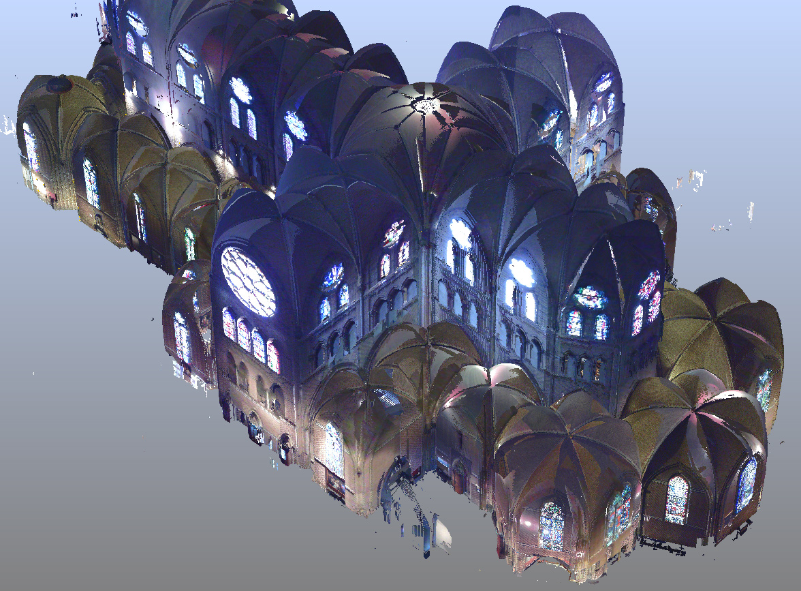
8. KinectFusion Limitations
KinectFusion is a real-time 3D reconstruction system using ICP-based pose tracking integrated into a TSDF voxel grid. It has three major practical limitations:
| Limitation | Root Cause | Consequence |
|---|---|---|
| Limited TSDF volume size | GPU memory constraints | Cannot reconstruct environments larger than ~3×3×3 m |
| ICP requires slow motion | Point correspondences fail on large displacements | Camera must move slowly and smoothly |
| Drift causes geometry melting | No loop closure; ICP error accumulates | Surfaces blur and distort permanently |
9. Limitation 1: TSDF Volume Size — Rolling Buffer
The Problem
A $512^3$ TSDF grid covers only ~3×3×3 meters and requires ~2 GB GPU memory. A $1024^3$ grid requires ~8.6 GB — often too large for real-time processing:
where $N$ is the grid resolution per dimension and $B$ is bytes per voxel (typically 8–16 bytes).
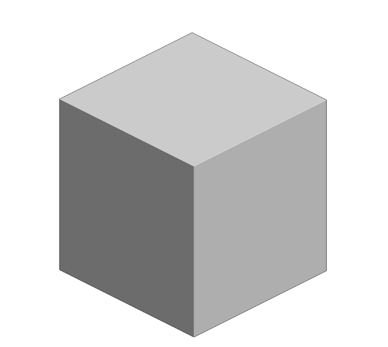
Rolling Buffer (Kintinuous)
Kintinuous introduces a rolling buffer to allow unbounded spatial extent while keeping GPU memory constant:
- Maintain the TSDF volume at its original GPU size (e.g., $512^3$).
- As the camera moves forward, offload the spatial region the camera has already passed (~30 cm offset) to CPU/system memory.
- Clear those voxels in the GPU volume.
- Create new empty TSDF space (~30 cm) in the camera's direction of movement.

10. Limitation 2: Drift and Geometry Melting
What is Drift?
Drift = accumulated erroneous pose estimation over time. In KinectFusion, each ICP iteration introduces a small pose error $\epsilon_i$. These accumulate:
Why Drift Causes Melting
When the camera pose estimate is wrong:
- The new depth image is projected onto the TSDF volume at a slightly incorrect position.
- The TSDF integration averages the new (misaligned) measurements with existing (correct) ones.
- The signed distance field contains contradictory measurements at the zero-crossing.
- The surface becomes blurred, doubled, or distorted — this is called "melting."
Recovery is nearly impossible: TSDF is lossy — the weighted average permanently corrupts voxel values. As more frames are integrated with accumulating drift, the corrupted model also degrades future ICP tracking — a vicious cycle.
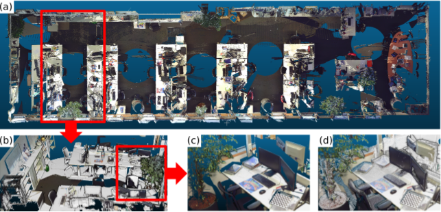
11. Solution A: Chained TSDF Boxes
Instead of one continuous TSDF volume for the entire session, create a chain of separate TSDF boxes, each covering a short time window (~10 seconds). Within each box, drift is minimal. After capture, all boxes are combined into one global model.
| Aspect | Detail |
|---|---|
| Local drift | Minimal — each box has short accumulation time |
| Global drift | Not corrected — boxes themselves may be misaligned |
| Loop closure | Not possible — boxes are independent during capture |
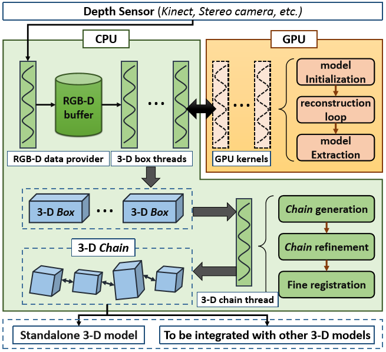
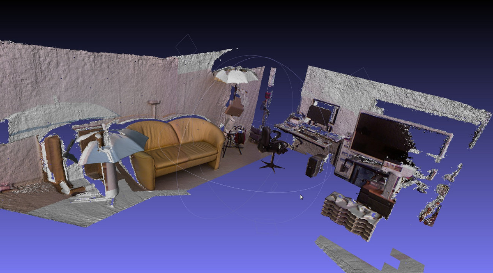
12. Solution B: Plane-Based Drift Correction
Method
- From every depth keyframe (~every 30 frames), detect large planar surfaces: walls, floor, ceiling, large furniture.
- Match these planes keyframe-to-keyframe using plane parameters (normal direction $\mathbf{n}$, distance $d$).
- With 3 matched non-parallel plane pairs, correct all 6 DoF of pose error: translation $(T_x, T_y, T_z)$ and rotation $(R_x, R_y, R_z)$.
Why It Resembles Loop Closure — but Better
Loop closure requires the camera to physically revisit a location. Plane-based correction uses persistent structural features (walls, floors) visible from many viewpoints — drift can be corrected at every keyframe, far more frequently than loop closure opportunities arise.
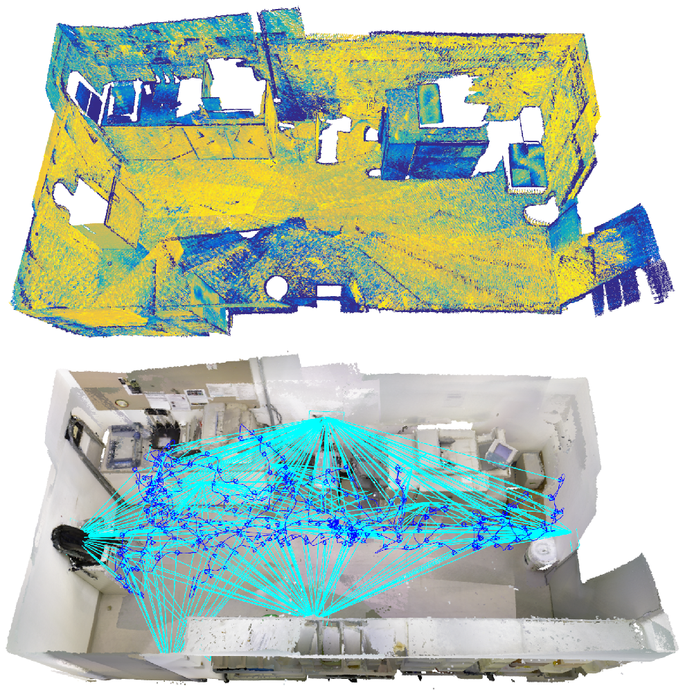
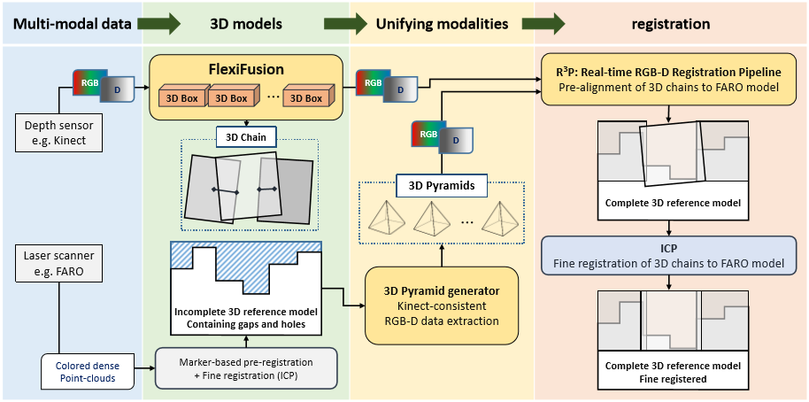
13. SVD-Based Pose Estimation
Given $N$ pairs of corresponding 3D points $\{(\mathbf{p}_i, \mathbf{q}_i)\}$, find the rigid transformation (rotation $R$ and translation $\mathbf{t}$) that aligns source points to target points:
Centroids: $\bar{\mathbf{p}} = \frac{1}{N}\sum \mathbf{p}_i$, $\quad \bar{\mathbf{q}} = \frac{1}{N}\sum \mathbf{q}_i$
Cross-covariance: $H = \sum_{i=1}^{N} (\mathbf{p}_i - \bar{\mathbf{p}})(\mathbf{q}_i - \bar{\mathbf{q}})^T$
SVD: $H = U \Sigma V^T$
Optimal rotation: $R = V U^T$ (if $\det(VU^T) = -1$, negate the column of $V$ for smallest singular value)
Translation: $\mathbf{t} = \bar{\mathbf{q}} - R \bar{\mathbf{p}}$
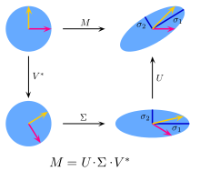
| Property | Detail |
|---|---|
| Optimal | Minimizes sum of squared distances (least-squares optimal) |
| Closed-form | No iterative optimization needed |
| Requires | Known point correspondences; minimum 3 non-collinear pairs |
| Use in ICP | ICP iterates: find correspondences → compute SVD → apply transform → repeat |